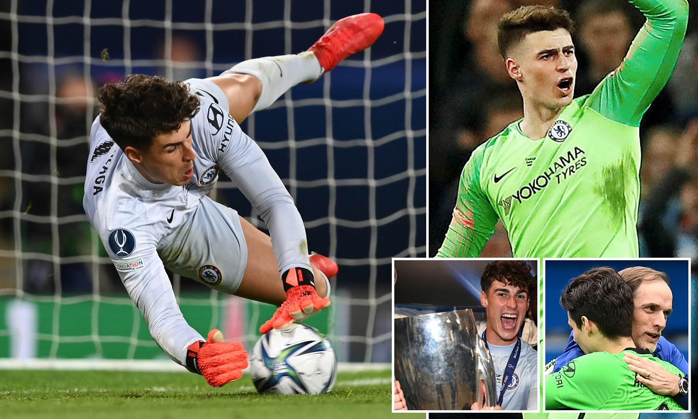
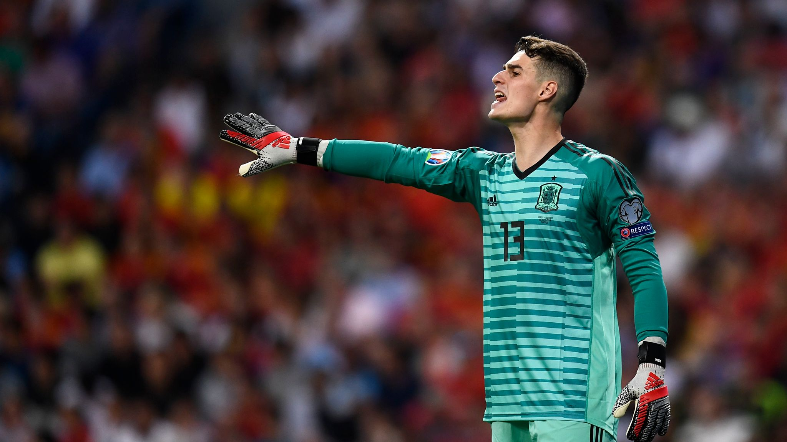

เกปา มีความรวดเร็วและปฏิกิริยาการตอบสนองสุดวิเศษ เขาพัฒนาการเล่นโดยรวมตั้งแต่ยึดมือหนึ่งของแอธเลติก บิลเบา นายด่านรายนี้เป็นคนที่เซฟบอลได้ดีและมีความมั่นใจในการเล่นด้วยเท้าพร้อมขึ้นเกมจากแดนหลังแม้จะตกอยู่ภายใต้ความกดดัน
ผลงานของเกปากับสิงห์บลูส์ทำให้เขาได้ลงเล่นให้กับทีมชาติสเปน ซึ่งเป็นบ้านเกิดตั้งแต่เดือนตุลาคม ปี 1994
ภายหลังการมาของ เอดูอาร์ เมนดี้ นายด่านชาวสแปนิชได้ลงเล่นทุกนาทีสำหรับการแข่งขันเอฟเอ คัพ ตั้งแต่รอบ 3 ไปจนถึงรอบชิงชนะเลิศ อย่างไรก็ตาม สิงห์บลูส์เจอกับความผิดหวังที่เวมบลีย์ด้วยน้ำมือของเลสเตอร์ จนถึงจุดนั้น อาร์ริซาบาลาก้า เสียเพียงลูกเดียวใน 5 นัดของรายการ โดยโชว์การเซฟสำคัญช่วยให้พวกเรารักษาสกอร์นำลูตันในรอบที่ 4 รวมทั้งจังหวะเซฟลูกยิงเผาขนในเกมถัดมากับบาร์นสลี่ย์ซึ่งสกอร์เสมอกันอยู่ 0-0
ผลงานของแข้งวัย 26 ปีที่โอ๊กเวลล์ ทำให้เขาได้ลงตัวจริงในเกมพรีเมียร์ ลีกกับนิวคาสเซิ่ล 4 วันหลังจากนั้น โดย เกปา แสดงการเซฟที่ยอดเยี่ยมที่สุดของเขาในฤดูกาลจากจังหวะที่ โจ วิลล็อค โหม่งลงพื้น โดยปัดปลายมือไปเปลี่ยนทางบอลไปชนเสา เขาได้ลงตัวจริง 2 นัดติดต่อกันอีกครั้งในเดือนเมษายน และพฤษภาคม โดย ทูเคิ่ล เน้นย้ำถึงความสำคัญของการลงเล่นอย่างสม่ำเสมอ
การลงสนามนัดที่ 100 ของ เกปา กับเชลซี เกิดขึ้นในช่วงเริ่มต้นเส้นทางเอฟเอ คัพ ของพวกเราโดยเขาเก็บคลีนชีตในรอบ 3 ที่เจอกับมอร์แคมบ์
ฟอร์มที่น่าชื่นชมของเกปาในระดับสโมสรกับแอธเลติก บิลเบา ทำให้เขาได้ลงเดบิวต์ให้กับทีมชาติสเปนชุดใหญ่ในนัดที่ถล่มคอสตา ริก้า 5-0 เมื่อเดือนพฤศจิกายน ปี 2017 เขามีชื่อติดขุมกำลัง 23 นักเตะชุดสู้ศึกฟุตบอลโลกที่ประเทศรัสเซีย และในปี 2019 ก็กลายเป็นขาประจำที่ได้ลงเฝ้าเสาให้กับพลพรรคกระทิงดุ
หลังจากเก็บคลีนชีตในการลงเล่นฟุตบอลชิงแชมป์แห่งชาติยุโรปรอบคัดเลือกเป็นครั้งแรกเมื่อเดือนมีนาคม ปี 2019 ในนัดที่เอาชนะมอลต้า 2-0 เกปาได้ลงเล่นในโปรแกรมทีมชาติช่วงซัมเมอร์เดือนมิถุนายนและแบ่งปันทำหน้าที่กับดาบิด เด เกอาจนถึงสิ้นปี 2020
SOCIAL MEDIA
 |
|